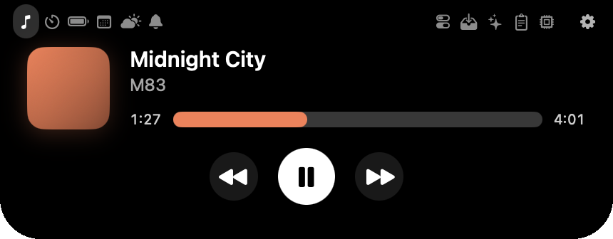
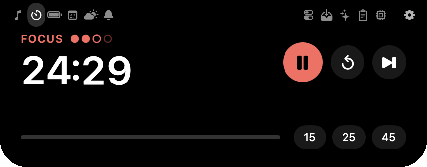
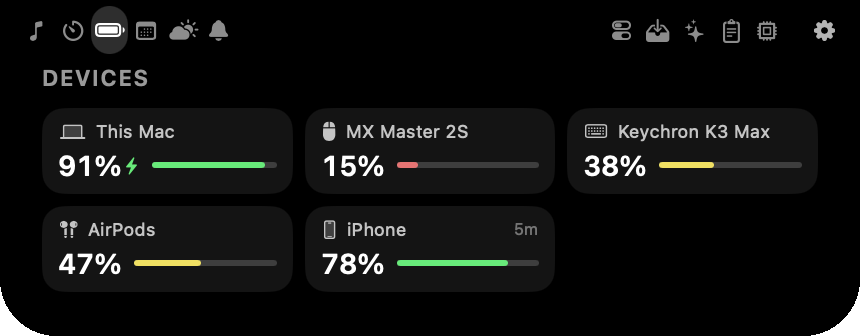
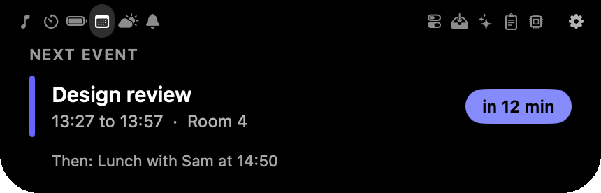
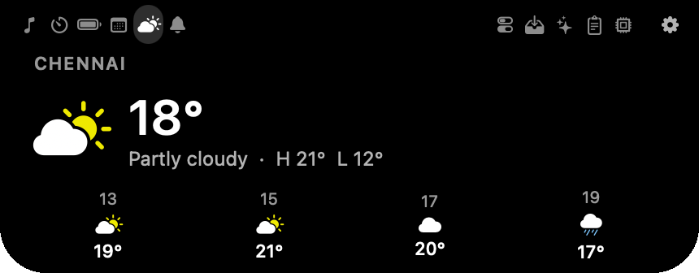
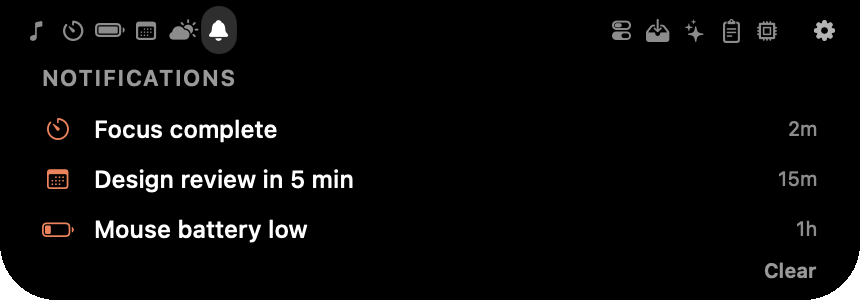
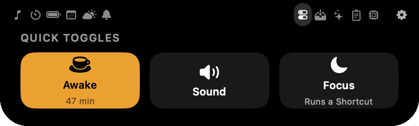
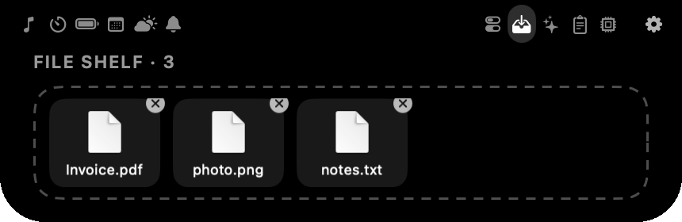
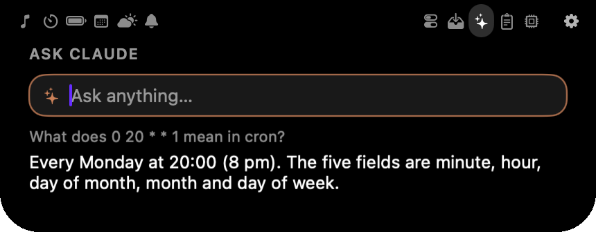

Now playing
Apple Music and Spotify. Album art, controls, and a progress bar you can drag.
Free · Open source · for MacBooks with a notch
Nimbus turns the notch into a small, smart island. What's playing, your Pomodoro, your next meeting, every battery you own. All a glance away.
Free · Version 0.1 · macOS 14 or later · Apple silicon

This is the real thing, in miniature. Move your mouse over the notch.
Eleven widgets
Switch widgets with the icons beside the notch, or with a two-finger swipe.

Apple Music and Spotify. Album art, controls, and a progress bar you can drag.

Focus and break cycles. Drag the time to set it, and it stays in the notch while it runs.

Your Mac, keyboard, mouse, AirPods and iPhone, in one glance. It warns you before one runs out.

Your next meeting, counting down. It slides into the notch just before it starts.

Right now and the next few hours. No account and no key. Only the city you typed is sent.

Nimbus's own alerts slide in, then tuck away after a few seconds.

Keep your Mac awake, mute it, or run a Focus Shortcut, in one tap.

Drop a file on the notch to park it. Drag it out when you need it.

Type a question and the answer streams in. Uses your own Anthropic key.
Plus clipboard history and system stats, both off until you want them.
Make it yours
Try the themes and animations on the island above. Every one of them is in Settings.
Obsidian, Glass, Aurora and Paper. Or set your own colours, backgrounds and borders.
Classic, Drop, Pop, Elastic and Dissolve, with springs you can tune yourself.
The notch, the compact view and the open island all resize with a slider.
Turn any widget off and it stops completely. No polling, no background work. Nimbus follows macOS's Reduce Motion setting and can open when you log in.
Export your whole look as one small file and send it to a friend, or import theirs.
iPhone and iPad
Apple doesn't let a Mac read an iPhone's battery. So Nimbus makes Shortcuts that send it, over your own Wi-Fi. No account, no cloud.
Switch it on in Settings. Nimbus builds five Shortcuts with your Mac's address already inside.
Through iCloud or AirDrop. Run Nimbus Sync once and your battery appears.
Start a Pomodoro on your Mac, or show a phone timer in the notch.
Off until you switch it on. Every request needs a private token, only a short fixed list of things is allowed, and it only works on your local network.
Get it
No Terminal, no coding. Four steps.
Click Download for Mac, then double-click the file in your Downloads folder.
Drag Nimbus into Applications and double-click it. macOS will say it can't verify the app. Click Done.
Open System Settings → Privacy & Security, scroll down and click Open Anyway next to "Nimbus was blocked".
Open Nimbus again and click Open. It has no Dock icon: find it in the menu bar and move your mouse over the notch.
xattr -dr com.apple.quarantine /Applications/Nimbus.app and press Return, then open Nimbus again.Good to know
No tracking, no accounts, no servers of ours. Weather sends the city you typed, and Ask Claude sends your question when you press Return. Your keys live in the macOS Keychain.
The whole project is open source under the MIT licence, so anyone can read the code on GitHub. Nimbus only asks for a permission when you first use a feature that needs it.
Yes. It draws a small pill at the top of the screen instead. It looks best on a notched MacBook.
Not yet. This first version is built for Macs with Apple silicon (M1 and newer).
Apple Music and Spotify. macOS doesn't let other apps share what they're playing.
No. macOS has no way to read other apps' notifications. Nimbus shows its own alerts: calendar reminders, finished timers and low batteries.
To update, download the newest zip from the same link and replace the old app. To uninstall, choose Quit from its menu bar icon and drag Nimbus from Applications to the Trash.